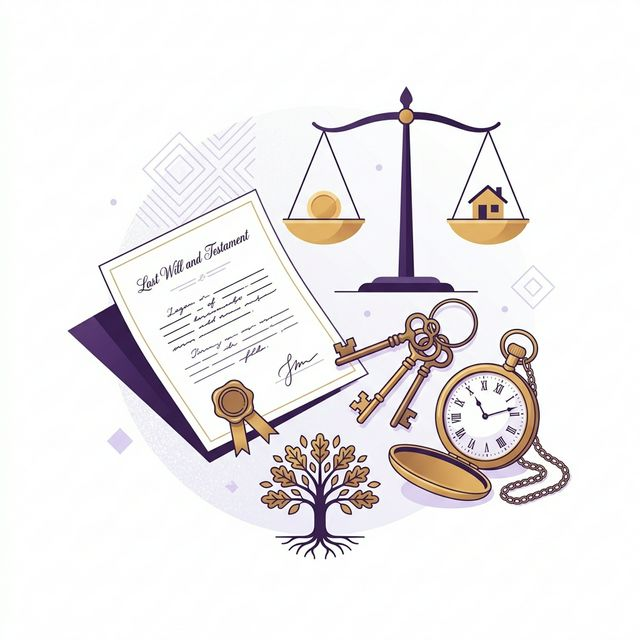
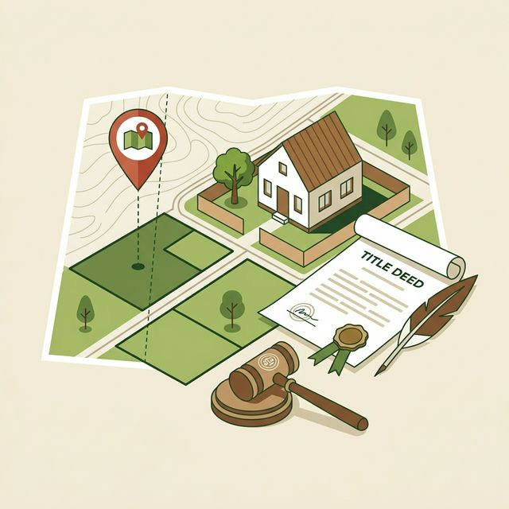
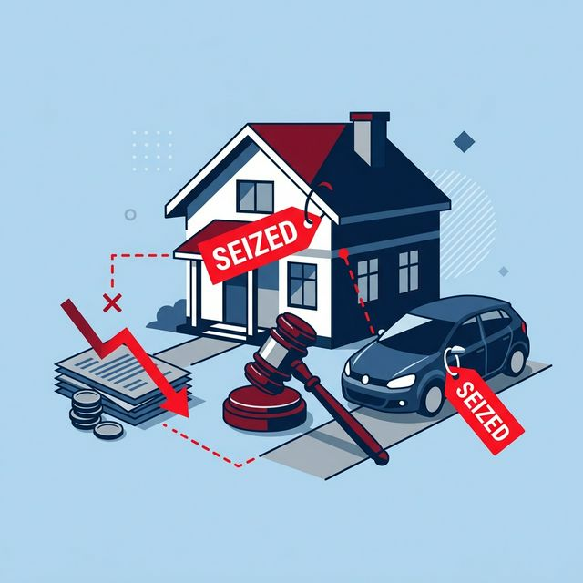

รู้เรื่องกฎหมายแบบเข้าใจง่าย
รวบรวมข้อมูลกฎหมายประเภทต่างๆ ที่ประชาชนควรรู้ เพื่อปกป้องสิทธิของตนเอง
1. คดีอาญา
คือคดีที่เกี่ยวกับ “การกระทำผิดกฎหมายที่กระทบต่อสังคม” รัฐจึงต้องลงโทษผู้กระทำผิดเพื่อรักษาความสงบ
- ลักทรัพย์, วิ่งราวทรัพย์
- ทำร้ายร่างกาย
- คดีฉ้อโกงประชาชน
2. คดีแพ่ง
คือคดีข้อพิพาทเกี่ยวกับเรื่องส่วนตัว ทรัพย์สิน หรือสิทธิระหว่าง “เอกชนกับเอกชน”
- ฟ้องเรียกเงินกู้ยืม
- ผิดสัญญาว่าจ้าง
- เรียกค่าเสียหาย (ละเมิด)

3. คดีมรดก
คือคดีที่เกี่ยวข้องกับ “ทรัพย์สิน สิทธิ หน้าที่ และความรับผิดชอบของผู้ตาย”
- ลูก/ญาติ ทะเลาะกันเรื่องการแบ่งบ้านของพ่อแม่
- มีพินัยกรรม แต่มีคนคัดค้านว่าปลอมแปลง
- ร้องขอตั้งผู้จัดการมรดก

4. คดีที่ดิน
คือข้อพิพาทที่เกี่ยวกับ “สิทธิในการครอบครองหรือเป็นเจ้าของที่ดิน”
- ที่ดินทับเขตกัน แนวรั้วล้ำเข้ามา
- ฟ้องร้องครอบครองปรปักษ์ (แย่งกรรมสิทธิ์)
- การปลอมแปลงเอกสารสิทธิโฉนดที่ดิน
- การฟ้องเปิดทางภาระจำยอม / ทางจำเป็น
5. พ.ร.บ. อุบัติเหตุ (ประกันรถ)
คือกฎหมายเกี่ยวกับ “ประกันภัยภาคบังคับของรถยนต์และรถจักรยานยนต์” ซึ่งกฎหมายบังคับให้รถทุกคันต้องมี
- หากรถไม่ต่อ พ.ร.บ. จะมีความผิดตามกฎหมาย (ปรับสูงสุด 10,000 บาท)
- สามารถเบิกค่าเสียหายเบื้องต้นได้ทันทีโดยไม่ต้องรอพิสูจน์ถูกผิด

6. การยึดทรัพย์
กระบวนการทางกฎหมายที่เกิดขึ้นเมื่อ “ลูกหนี้ไม่ยอมจ่ายเงินตามคำพิพากษาของศาล”
- ยึดบ้าน, คอนโด, หรือที่ดิน (แม้ติดจำนองก็ยึดนำมาขายทอดตลาดได้)
- ยึดรถยนต์ที่ผ่อนหมดแล้ว
- อายัดเงินเดือนส่วนที่เกิน 20,000 บาท/เดือน (ตามกฎหมายใหม่)
7. ผิดสัญญา
คือการที่คู่สัญญาฝ่ายใดฝ่ายหนึ่ง “ไม่ทำตามที่ตกลงกันไว้ในสัญญา” อย่างจงใจหรือประมาทเลินเล่อ
- ซื้อของแล้วไม่จ่ายเงิน หรือจ่ายเงินแล้วผู้ขายไม่ส่งของ
- ผู้รับเหมาทิ้งงาน ทำงานไม่แล้วเสร็จตามกำหนด
- ผู้เช่าไม่จ่ายค่าเช่า หรือทำทรัพย์สินในบ้านเช่าเสียหาย
พบกับผู้เชี่ยวชาญตัวจริง
ติดตามการตอบคำถามปัญหาข้อกฎหมายสดๆ ให้ความรู้กฎหมายแบบเจาะลึก เข้าใจง่าย พร้อมไขข้อข้องใจให้คุณทุกสัปดาห์
ดู Live สด ตอบคำถามบน YouTube